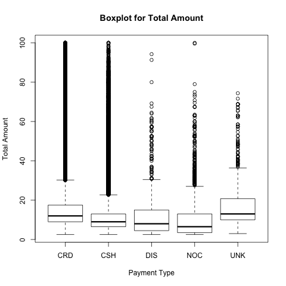

8 June 2015
Zhewen Hu and Clark Fitzgerald
Which plotting libraries are fastest and most efficient for exploratory analysis of medium sized data sets? In this report we compare several popular plotting libraries by performing basic exploratory data analysis (EDA) on a subset of the NYC taxi data set. Additionally we plot informative maps about pickup and dropoff locations.
The data consists of a sample of the 2013 NYC taxi data from Assignment 5. These are available at http://www.andresmh.com/nyctaxitrips/ and there is a description of the fields at http://publish.illinois.edu/dbwork/open-data/. Since we are interested in the performance of the libraries for working on data in memory we wrote a program to randomly sample approximately 200 MB of the original 50 GB of data. This produced a CSV file containing 1.25 million rows and 21 columns. Below is an example:
| trip_time_in_secs | pickup_longitude | total_amount | ... |
|---|---|---|---|
| 1685 | -73.862839 | 38.3 | |
| ... |
We compared the following open source libraries from R and Python:
Speed was the primary focus. How long to make a single plot?
In general we saw Matplotlib was fastest with R not far behind. ggplot was typically slower than R, but this is understandable because it's putting more features on the plots.
Do the defaults look reasonable or are additional tweaks needed?
R does a nice job using clean, simple defaults. ggplot2 has the most aesthetically pleasant defaults, but the font is a little small. Matplotlib makes it easy to change the defaults through the use of style sheets. A nitpick here is the need to always call tight_layout so that the labels are not cut off on the saved plot.
How expressive is the code? Extensibility? Maintainability? Learning curve?
R and Matplotlib actually feel closer together than R and ggplot2. ggplot2 uses Wilkinson's grammar of graphics and requires data to always be in a data frame. R's formula notation is handy for plots such as the boxplot. Each library uses amount the same number of lines of code to do the basic plots presented here.
We've taken care to make sure that this analysis can be reproduced. Our principal tool for this is GNU make. pandoc makes for easy conversion between formats. The scripts are written in such a way that they time only the desired steps. This excludes the time required to load in the data from disk. The timings were done serially on a 2010 Macbook with no other programs running.
The timings for each program
The timings for each program scaled within plot type
Plot a histogram of the single variable total_amount for values of total_amount less than 100.
In this plot we see the greatest difference in speed. R is fastest at about 0.4 seconds. Matplotlib is right behind at 0.45 seconds. ggplot2 is significantly slower at about 3.5-4 seconds. These fast times makes this a good choice of plot for EDA of large data sets.
Regarding aesthetics, R adds nice default labels.
Scatter plot of two variables: trip time in minutes and total_amount where the points are semi transparent. This shows the distribution of many points without completely overplotting. For this timing we also convert trip_time_in_seconds to minutes by dividing by 60.
These plots revealed horizontal strata in the data where the total amount corresponds to total fares between 50 and 70 dollars.
For these plots Matplotlib is much faster. It takes around 5 seconds to plot 1 million alpha shaded points, while R took around 35 seconds and ggplot was around 55 seconds.
Aesthetically R and ggplot2 make a nicer default choice of axis ranges, since Matplotlib leaves an excessive amount of blank space.

We added an additional step to filter for rides less than 1 hour and total amount less than 100.
Perform the same scatter plot as the alpha shading, but instead of plotting all points choose a random sample without replacement of 200 points.
This is one of the most informative plots. It demonstrates the increase in total fare as the ride gets longer. It's also one of the computationally cheapest plots. Matplotlib is much slower. We speculate that this is because there is less overhead to create and save a single plot in R.
We feel Matplotlib has nice defaults here regarding choice of scale and visibility of points.

Boxplots of total_amount grouped by payment_type where total_amount is less than 100. The long tails here suggest that the distribution of the data is quite skewed.
Matplotlib was fastest here at 1.8 seconds. R was slower at 4.8 seconds and ggplot2 was around 10.
Using the default pandas method in Matplotlib writes overlapping text for the title, which is not good.

For this part, we test the performance of ggmap by visualizing the pick-up longitude and latitude and drop-off latitude. The task is to see that if ggmap works well in expressing data information.
If we get the map source from Google, it is not easy to adjust the range of the map. Because Gmap source has its own default for the map. So it is more flexible to source from stamen map library. We can see ggmap does a good job in visualing the data points on the map. Also, it is clear to see that taxi service is busier in Manhattan area than Brooklyn. (The map plots are at the end of the report.)
Source is Google Maps
Source is stamen map library
All programs tested are fully capable of doing exploratory data analysis of millions of data points on a local laptop. Matplotlib is generally faster, but not always. ggplot2 is slower than R, but has more beautiful defaults and allows rapid creation of more complicated data analysis graphics. R is quick to learn and provides nice defaults. ggmap works pretty good in visualizing data. But do make sure the longitude and latitude data is correct.